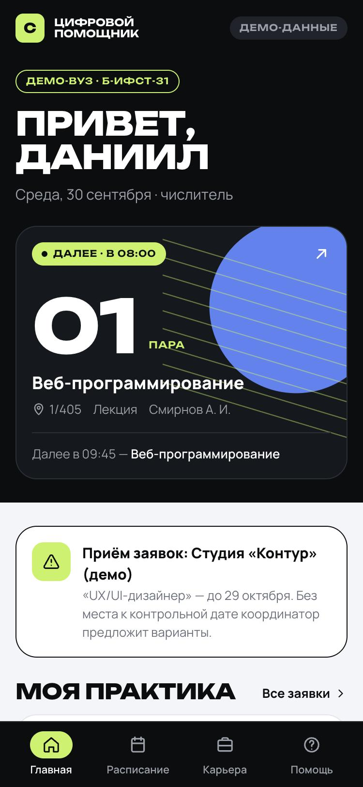
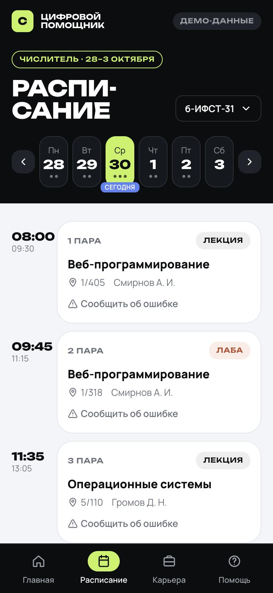
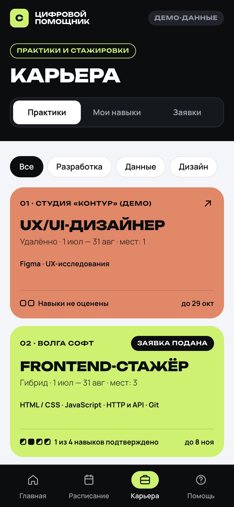
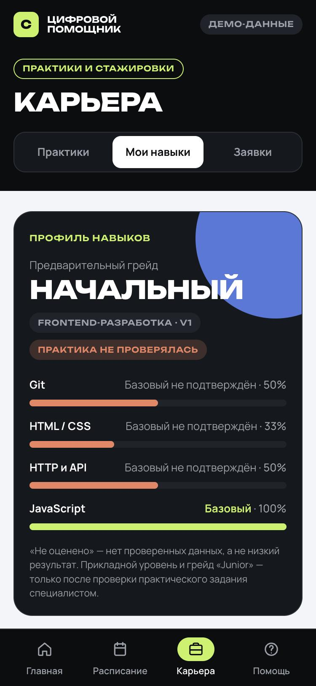
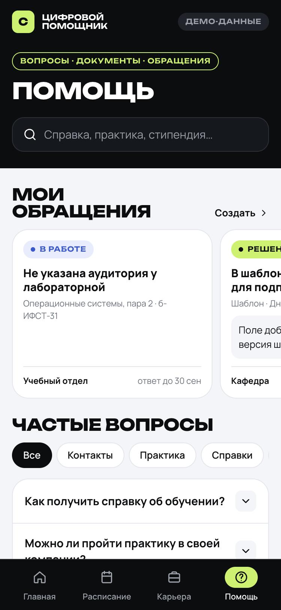

Мини-приложение в MAX и платформа для вузов и работодателей: расписание, практики и заявки, диагностика навыков с проверкой человеком, документы и обращения.
| Логин | Роль |
|---|---|
| coordinator@demo.test | Координатор вуза: практики, заявки, обращения |
| hr@demo.test | Работодатель: тесты и кандидаты |
| reviewer@demo.test | Проверяющий: практические задания |
| editor@demo.test | Редактор: шаблоны и частые вопросы |
Пароль всех учётных записей — password. Админ-панель: max-hack.ai-weblab.ru/admin
Все данные на стенде демонстрационные и помечены в интерфейсе.
Предложения практик рассыпаны по чатам и объявлениям. Непонятно, каким требованиям он соответствует и что происходит с поданной заявкой.
Узнаёт о студенте без места и о проблемах на практике в последний момент. Заявки и договорённости живут в переписке и таблицах.
Получает отклики без подтверждённых навыков: резюме студента без опыта мало что говорит, отбор идёт вручную.
Повседневные сервисы — расписание, справки, шаблоны — тоже разбросаны, поэтому студент снова идёт в деканат, а сотрудники отвечают на одни и те же вопросы. Это гипотеза, которую мы проверяем интервью и пилотом, а не выдаём за факт.
Расписание, практики и заявки, диагностика навыков, документы, обращения — внутри MAX, без отдельного логина.
Вход, уведомления о решениях и ответах, диплинки прямо в нужный экран.
Вуз ведёт практики, заявки и обращения. Работодатель отбирает кандидатов. Специалист проверяет практические задания.
Тот же слой логики открыт наружу: другой вуз подключается данными и настройками.
Мы не обещаем «ИИ-оценку кандидата». Навыки подтверждаются проверяемыми заданиями, практическую часть оценивает человек по рубрике, а решение принимают люди: координатор и работодатель. Всё, что не проверено, так и называется — «не оценено».
На каждом шаге студент получает уведомление от бота, а вуз — событие в своей панели. Путь замкнут: от «не знаю, что умею» до «место подтверждено и проблема решена».

Главная: текущая пара, заявка, сроки

Расписание: числитель, источник данных

Практики: совпадение по навыкам

Навыки: уровни и грейд

Помощь: обращения, FAQ, шаблоны
| Роль | Что делает в системе | Результат |
|---|---|---|
| Студент | Смотрит расписание, проходит диагностику, подаёт заявку, отправляет обращение | Понимает свои навыки и статус заявки, решает проблемы без похода в деканат |
| Координатор практики | Ведёт каталог практик, решает по заявкам, обрабатывает обращения | Видит, кто без места и что «зависло», решения фиксируются с историей и причиной |
| Работодатель | Смотрит отклики, фильтрует по навыкам и уровню, отмечает интерес | Отбирает кандидатов по подтверждённым навыкам, а не по самооценке в резюме |
| Предметный специалист | Проверяет практические задания по рубрике | Оценка обоснована критериями, история проверок сохраняется |
| Редактор / учебный отдел | Ведёт шаблоны документов, частые вопросы, тесты | Меньше повторных обращений; видно, какие ответы не помогают |
| Руководитель программы | Смотрит состояние заявок и обращений в кабинете вуза | Решения принимаются по данным системы, а не по памяти сотрудников |
вопросов и практическое задание в демо-тесте
критериев рубрики с привязкой к навыкам
правильных ответов уходит в браузер — ключи остаются на сервере
Доступ определяется типом организации и ролью участника: администратор, координатор, редактор, проверяющий. Работодатель видит результаты только тех студентов, которые разрешили их показать при подаче заявки.
MAX Bridge передаёт данные запуска, сервер проверяет подпись токеном бота по алгоритму из документации и создаёт сессию. Данные старше часа отклоняются.
Кнопка «Назад» в шапке MAX, скачивание файлов через WebApp.downloadFile по временной подписанной ссылке.
Вебхук с проверкой заголовка X-Max-Bot-Api-Secret, ответ сразу, обработка в очереди. Уведомления: решение по заявке, ответ на обращение, проверка практики.
Диплинки ?startapp= открывают конкретный экран: расписание, карьеру, помощь, карточку практики, результат диагностики.
Отдельно решены две вещи, о которые обычно спотыкаются: сертификат Минцифры добавлен в доверенные внутри образа (иначе запросы к API MAX не проходят), а cookie сессии выставлены как SameSite=None; Secure; Partitioned — для веб-версии MAX, где приложение открывается во встроенном окне.
Мини-приложение и админ-панель не ходят в собственное API по HTTP: все три интерфейса вызывают один слой действий и прав. Поэтому правила совпадают, а API не отстаёт от интерфейса — каждый сценарий покрыт тестом.
тестов: права, подсчёт баллов, дубли заявок, вебхук, уведомления
команда для запуска: docker compose up -d --build
минуты сборка образа вместе с фронтендом
коммита с понятной историей изменений
Push в main → раннер на сервере обновляет код → собирает тестовый образ и прогоняет тесты → пересобирает и перезапускает стек → проверяет, что сайт отвечает. Если тесты падают, развёртывание не выполняется.
Docker Compose: приложение, очередь, планировщик, PostgreSQL. Миграции выполняются при старте, демо-данные — только в пустую базу. Секреты в переменных окружения, в репозитории только примеры. Сертификат Let's Encrypt с автопродлением.
Документация в репозитории: README, архитектура, руководство по API, развёртывание и обслуживание, сценарий демонстрации, DATA-API.yaml.
| Показатель | Как считаем | Кому нужен |
|---|---|---|
| Время до подачи подходящей заявки | Один и тот же сценарий текущим способом и в продукте | Студент, координатор |
| Доля студентов с местом к контрольной дате | Подтверждённые места к дате / все, кому нужна практика | Руководитель программы |
| Доля заявок без ответа в срок | Заявки, превысившие согласованный срок, к общему числу | Координатор |
| Время первого ответа на обращение | От создания до первого содержательного ответа | Учебный отдел |
| Подтверждение решения студентом | Закрытые обращения с подтверждением; молчание считаем отдельно | Вуз |
| Согласованность оценки навыков | Сравнение предварительного уровня с независимым разбором практики | Работодатель, преподаватель |
За 2–4 недели пилота проверяются удобство, работоспособность и управляемость процесса. Влияние на трудоустройство и качество практики требует более длительного наблюдения — мы не выдаём его за уже достигнутый результат.
Мы намеренно не добавляли генеративные функции в основной путь: сценарий работает без LLM, а значит его можно проверить и повторить.
Бот @t475_hakaton_max_bot → кнопка «Открыть». Вход выполняется автоматически.
max-hack.ai-weblab.ru/app/start → «Войти как демо-студент»
Админ-панель: /admin · API: /docs/api · Код: github.com/Serafimka4/max-hack-student-assistant · Демо-учётные записи и commit hash — на втором слайде
Кальная Дарья · Земсков Егор · Дунаев Денис